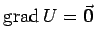

Der absolute Betrag des Gradienten ist in den Punkten größer, in deren Umgebung die Feldliniendichte größer ist.
Der Gradient verschwindet (), wenn sich in dem betrachteten Feldpunkt ein Maximum oder Minimum von U befindet. Dort entarten die Niveauflächen bzw. Niveaulinien zu einem Punkt.